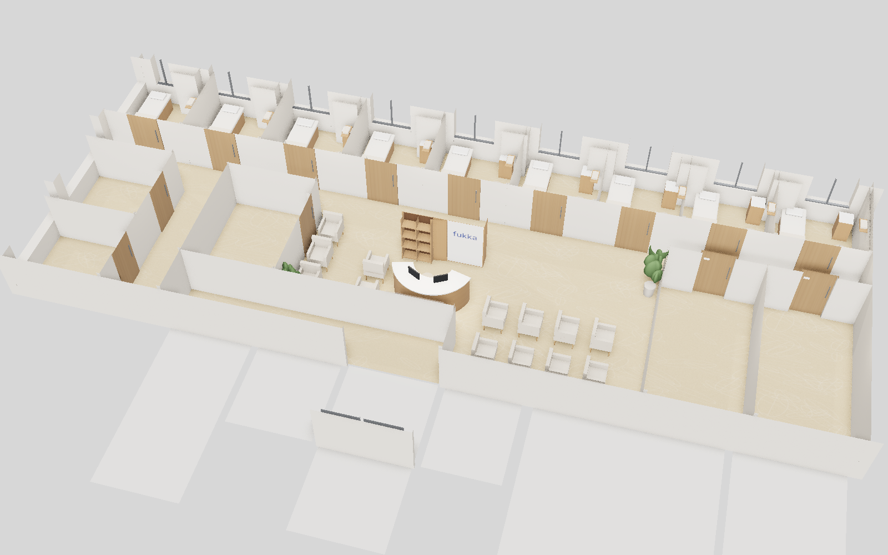
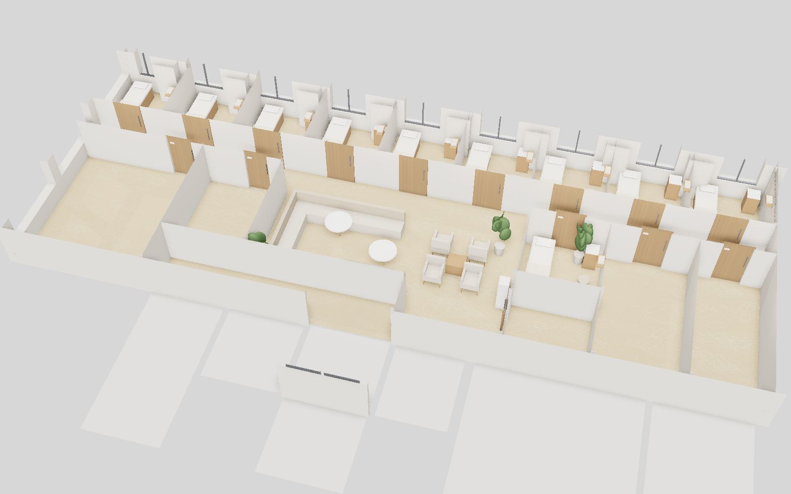
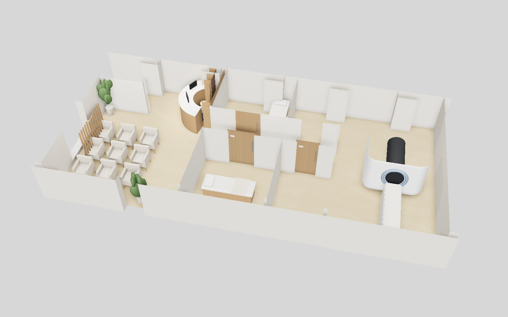
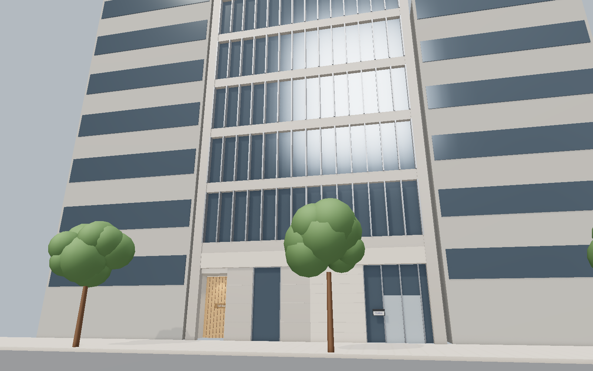
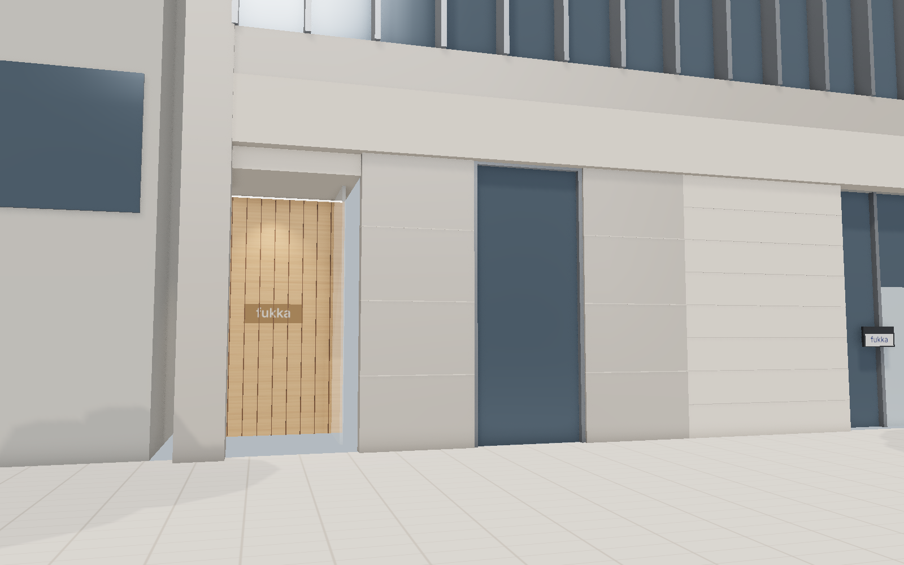
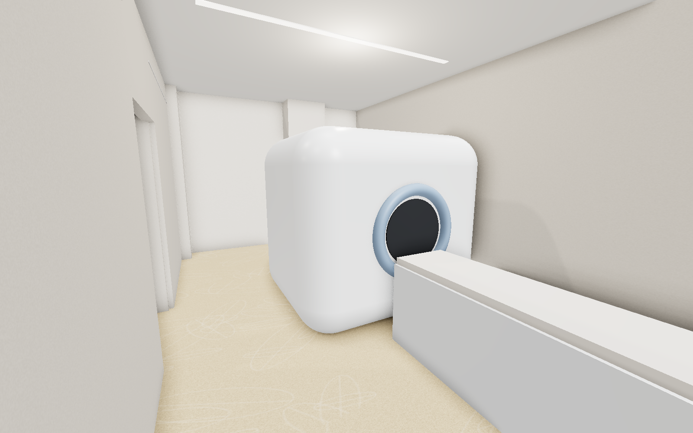
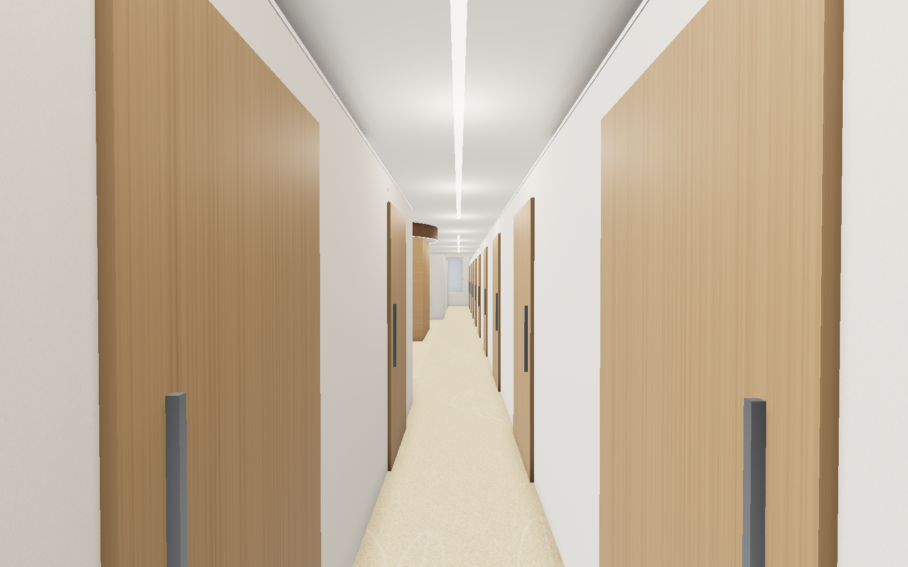
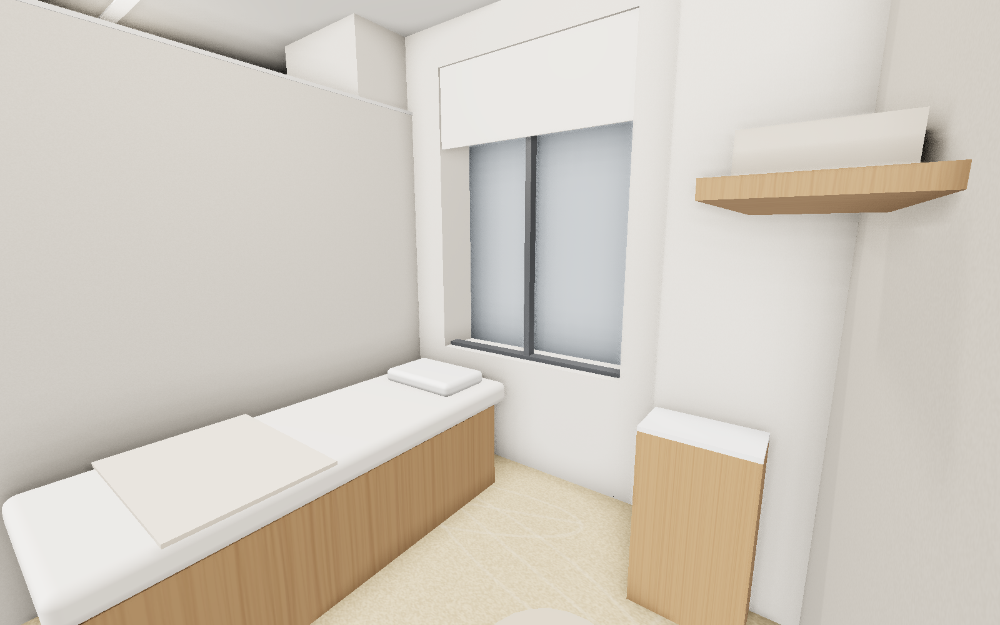
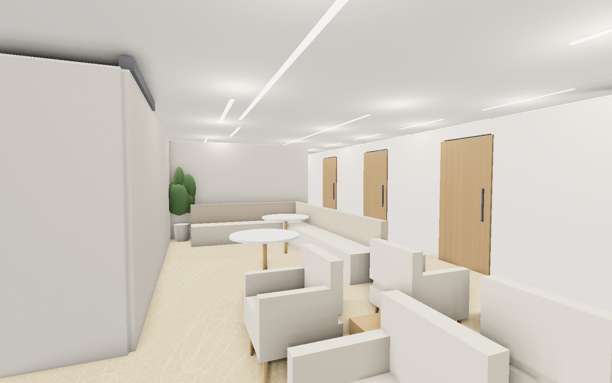

銀座院の空間（白い塗り壁、木目、ベージュ系カーペット、中央の円形受付と木の天井リング）をそのまま拡大し、 施術ブースを増やした「銀座院の大型版」として計画します。1階は道路から直接入れる既設アプローチを活かした医療フロア（診察・処置・MRI）、 4階は受付・待合・更衣と施術室、5階は施術室とフリースペース・スタッフエリアとしています。
| 1F | 診察室、処置室、MRI操作室、MRI機械室、MRI室（磁気シールド）、待合 |
|---|---|
| 4F | 施術室 9室、更衣室（男性）、更衣室（女性）、パウダーコーナー、カウンセリング室、待合、スタッフステーション、物品・リネン庫 |
| 5F | 施術室 10室、スタッフ休憩室、スタッフ更衣室、フリースペース、リネン・洗濯室、事務室、物品庫 |
新規・検査の患者：道路 → 1F専用アプローチ → 受付 → 診察・MRI
施術の利用者：ビルEV → 4F受付 → 更衣室 → 4F／5F施術室（EV移動）
スタッフ：5F休憩室・更衣室・事務室を拠点に各階へ









| 部位 | 仕上 | 備考 |
|---|---|---|
| 床 | タイルカーペット（防炎品・ベージュ系、銀座院同等柄）／MRI室・処置室：ビニル床シート | OAフロア（4・5F）上に施工 |
| 巾木 | ソフト巾木 H60（ベージュ） | |
| 壁 | LGS＋PB12.5（不燃）下地 AEP塗装（白・塗り壁調）／受付背面：木目調不燃化粧板 | 施術室間仕切は上部開放の欄間式（欄間 h=500） |
| 天井 | 既設天井（4・5F CH2,800）／1F：PB下地 AEP（CH約3,000） 受付上部：木目調リング（不燃） | 既設防災設備（感知器・SP・非常照明）を活かす |
| 建具 | 施術室：木目調不燃化粧板 引戸 W900×H2,100／エントランス：ガラス自動ドア | 鍵1本をビル側へお預け |
| 家具 | 受付カウンター（木目＋白天板）、待合チェア（ベージュ張地・木脚）、施術ベッド | 家具は防炎・難燃材料を優先 |
| 照明 | LEDライン照明・ダウンライト（電球色～温白色 3000～3500K、調光） | ビル電源容量内（1Φ約100VA/㎡、3Φ約200VA/㎡） |
| カーテン等 | 窓：防炎ロールスクリーン（アイボリー） | 防炎ラベル縫付 |
| MRI室 | 磁気シールド・RFシールド工事（専門業者）、専用電源・空調・チラー | 床荷重・搬入経路・振動対策をビル側と協議 |
| 床荷重 | 1F 5,000N/㎡、4・5F 3,000N/㎡。重量物（MRI）は1Fに配置 |
|---|---|
| 間仕切 | 不燃材使用。欄間式とし、防災設備の追加が必要な場合はB工事で対応 |
| 避難経路 | 2～5F：EVホール～避難階段附室を廊下状に整備。防火扉の開閉を妨げる造作なし |
| ファサード | 既設サッシ・ガラスは無加工、ガラス面から600mm以上離隔 |
| サイン | ビル指定場所（S1・S2）のみ。点滅・映像・赤色光・ネオン不使用、店名ロゴのみ |
| 設備 | 空調・電源は基準容量内。給排水（診察室・処置室の手洗い）は区画内の排水位置から計画、必要に応じ防水・漏水検知 |
| 用途 | 誘導用途区画のため診療所・施術所としての適合性を事前確認 |
| 提出図書 | B工事指示書・基本設計図書：着工2.5か月前／実施設計図・工事申請書：着工1か月前 |
※本資料は出店審査用の基本計画です。寸法・面積は募集資料および1F CADからの想定値で、 実施設計時にビル側の白図・設備図に基づき確定します。パースはイメージで、実際の仕上・家具とは異なる場合があります。